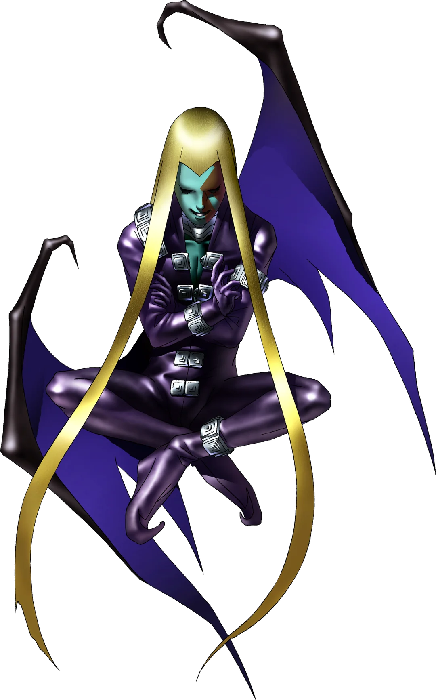

Loki
Arcano: La Justicia / El Loco | Elemento: Maldición (Eiga)

Origen y Mitología
En la mitología nórdica, Loki es un dios embaucador, hijo de gigantes, pero adoptado como hermano de sangre por Odín. Es un cambiaformas (puede convertirse en yegua, salmón, mosca, etc.) y una figura profundamente ambigua: a veces ayuda a los dioses y a veces causa desastres. Es el responsable de la muerte de Baldr, el dios de la luz, lo que desencadena el Ragnarök (el fin del mundo).
En el universo de Persona, Loki es un Persona de alto nivel que encarna el caos, el engaño y la rebeldía. Es especialmente famoso en Persona 5 por ser la verdadera forma del Persona de Goro Akechi, representando su verdadera naturaleza rebelde y su desprecio por las reglas impuestas por la sociedad.
"¡El caos es mi lienzo y el engaño mi pincel! ¡Muestra tu verdadera cara!"
Estadísticas de Combate
Loki es un Persona de nivel avanzado, con estadísticas muy equilibradas y un poder destructivo considerable:
| Atributo | Valor | Descripción |
|---|---|---|
| Nivel | 45 | Nivel inicial de invocación. |
| Fuerza | 30 | Ataque físico básico y cortes. |
| Magia | 32 | Poder de los hechizos de maldición. |
| Resistencia | 28 | Defensa contra ataques físicos. |
| Agilidad | 35 | Velocidad y evasión (muy alto). |
| Suerte | 25 | Probabilidad de golpes críticos. |
Habilidades y Afinidades
Loki domina el elemento de maldición y los ataques físicos. Estas son sus habilidades más letales:
- Eiga: Ataque medio de maldición a un enemigo.
- Maeiga: Ataque medio de maldición a todos los enemigos.
- Megidola: Ataque de daño masivo (alma) a todos los enemigos.
- Attack Master: Aumenta la fuerza de ataque de todo el equipo al inicio del combate.
- Brave Blade: Ataque físico pesado a un enemigo.
Debilidades y Resistencias
Su naturaleza caótica lo hace resistente a muchas cosas, pero tiene un punto débil muy claro:
- Resistente a: Maldición, Fuego y Electricidad.
- Débil contra: Bendición (Kouha).
¿Quieres saber más?
Si te interesa la mitología nórdica, puedes aprender más sobre este fascinante dios en: La mitología de Loki en Wikipedia.